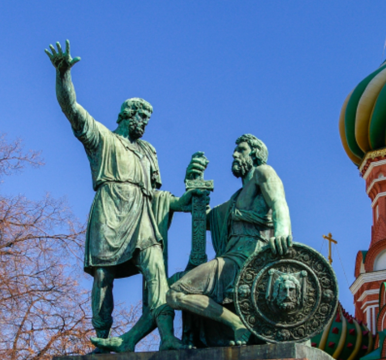
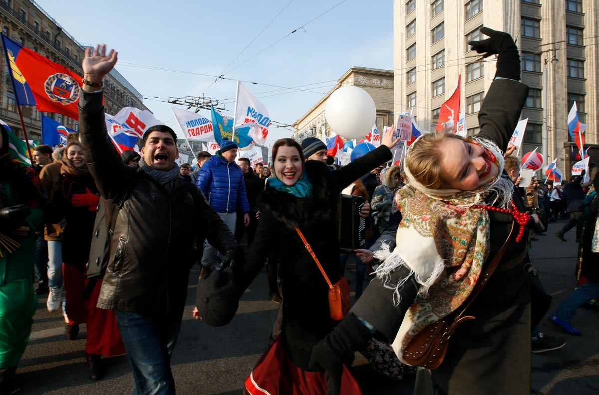

Explain the history and meaning of National Unity Day, ask questions about a Moscow tour, compare two ways of celebrating and write a 100–140-word email.
Discuss the questions. Say what you already know; return to your first answers at the end.
1. Do you know why this holiday was created?
2. How do people in Russia usually celebrate Unity Day?
3. What does the word unity mean to you?
4. Why do you think it is important for a country to celebrate unity?
5. How is Russian Unity Day different from other Russian holidays?
6. What historical events are connected to this day?
7. In your opinion, what helps people in a country stay united?
8. What symbols or traditions might represent unity in Russian culture?
Complete the text with the correct forms of the words in brackets. This adapted version has 10 gaps.
National Unity Day is one of the dates celebrated in Russia. In 1612, a volunteer army by Kuzma Minin and Prince Dmitry Pozharsky liberated Moscow from foreign invaders.
This event to be an important turning point in the Time of Troubles. Several months after the liberation of Moscow, a national assembly was convened, together representatives of different groups. A new tsar, Mikhail Romanov, was elected.
Minin encouraged people to support the volunteer army. In appeal, he called on them to work together. The victory later a symbol of unity. The modern holiday for the first time in 2005, following a law in December 2004.
events remind people of the importance of solidarity. The monument to Minin and Pozharsky stands in Moscow's Red Square. The funds for creation were raised through public donations.
Choose one answer for each question. Questions 4, 7–9 also check cultural knowledge beyond the first text. Discuss unfamiliar facts with your teacher.
Read the second text and complete all 15 gaps. Use the words in brackets to form words that fit grammatically.
National Unity Day in Russia on 4 November. Its history back to 1612, when the country faced a serious political crisis and foreign invaders threatened independence. At that time, a volunteer army by Kuzma Minin and Dmitry Pozharsky began to fight for the country's freedom. Minin was a wealthy merchant and the elected head (zemstvo elder) of Nizhny Novgorod, while Pozharsky was a prince and an experienced military commander. Minin on people from different towns and villages to unite and support the volunteer army. Thousands of people responded to his appeal, and Moscow in November 1612. The victory, as an important moment in Russian history, became a symbol of national unity. The modern holiday in December 2004, and people celebrated it in 2005. Since then, it an important part of the country's cultural life. Today, people enjoy part in events held in town squares. Concerts and historical exhibitions to help citizens learn more about the country's past. The events of 1612 are still discussed, and continue to inspire people. National Unity Day reminds us that people from different ethnic groups in Russia can stand together despite their differences. It is one of the examples of how a shared history can bring people together.
Answer the follow-up questions using evidence from the second text. For the last question, give your own view and a reason.
1. When does National Unity Day take place in Russia, and what historical events does it commemorate?
2. Who led the volunteer army in 1612, and what did Kuzma Minin call on people to do?
3. When was the modern holiday introduced, and when was it celebrated for the first time?
4. How do people celebrate National Unity Day nowadays? Give two examples of activities mentioned in the text.
5. Why do you think it is important for people from different ethnic groups to feel united? Can shared history help bring people together? Why or why not?
Do you recognise this monument? Imagine you are going on a tour around Moscow and want to learn more about it.

Ask four direct questions. Practise asking each question within 20 seconds.
1. starting point
2. price for one person
3. route
4. location of the monument to Minin and Pozharsky
Use question word order, the correct auxiliary and a question mark. Ask a complete direct question, not “Could you tell me…?”.
Imagine that you and your friend are doing a school project “Celebrating National Unity Day”. You have found some photos to illustrate it, but for technical reasons you cannot send them now. Leave a voice message explaining your choice and sharing ideas for the project.

Preparation: 2.5 minutes. Speaking: up to 3 minutes, 12–15 sentences. Talk continuously.
Compare taking part in a street celebration with watching a traditional cultural performance. Do not invent details you cannot see.
You have received an email message from your English-speaking pen-friend Mark.
… Our teacher asked us to prepare a presentation about national holidays in different countries. I chose Unity Day in Russia. What event does this holiday commemorate? What official events are held? How does your family celebrate it? By the way, I’ve joined a reading club at our school library …
Write an email to Mark. In your email:
Write 100–140 words. Remember the rules of email writing.
0 words · target 100–140
Independent practice: write a second email or plan it orally after completing the email to Mark.
You have received an email message from your English-speaking pen-friend Sally.
… Next week we’ll have a special history project about important national holidays. I’ve heard that you celebrate National Unity Day in Russia. When do people celebrate it? What do you usually do on that day? Do schoolchildren take part in any special events? I’ve also started collecting old postcards from different countries …
Write an email to Sally. In your email:
Write 100–140 words. Remember the rules of email writing.
0 words · target 100–140
Return to the opening questions. Give a short explanation of Unity Day without looking at the texts: date → historical event → meaning → a way of celebrating.
Grammar and multiple-choice tasks: 35 points. Speaking, discussion and emails need teacher feedback and are not included in this score.
Both PDFs and the Unity Day email to Mark from “Электронное письмо другу.docx” in this folder. Photos are taken from the supplied five-page PDF for this course copy; their original licensing was not supplied. The lesson has been prepared from the supplied course materials.